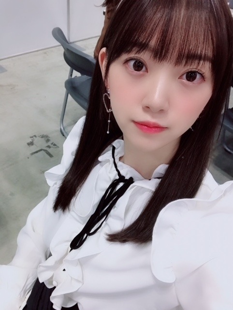

2018/1218Tue6月28日全国ロードショー
映画ホットギミックの公開日が
来年2019年の6月28日に決まりました！
来年の夏はホットギミックで
キュンキュンだけではない
新たな恋愛映画の形を見ていただけたら
嬉しいです

どんな作品になってるかな〜
わくわく

写ルンです の良さは
時間が経ってから現像して見返して
懐かしみながら
より一瞬一瞬の瞬間の大切さに気づけるところ。
あとは色合いがかわいい！
2019年はもっともっとカメラを活用します☺︎
一眼...チェキ...フィルム...写ルンです
たくさん撮ろうっ

まいちゅんとくだらない話をして笑い合うのが好き
お互いいいくらいに"適当"なのでラクです
先日のFNS歌謡祭
見て下さった方々ありがとうございました！！！
自分好みのクリスマスソングを
毎日聴いてるくらいクリスマスが好きだから
メドレー楽しかったな〜✨
ちなみにハートのイヤリングの
ブランドを聞かれますが
韓国のホンデの雑貨屋さんで買いました
ブランド名分からず
ちなみにハートのイヤリングの
ブランドを聞かれますが
韓国のホンデの雑貨屋さんで買いました
ブランド名分からず
お役に立てなくてすみませんm(__)m
コラボでは
AKB48さん 欅坂46さん IZ *ONEさんと
"必然性"を歌わせていただきました
歌詞もダンスも力強く
アイドルらしさが思う存分詰め込んであって
好きな曲です
IZ*ONEのユリさんとペアの振りが多くて
目を合わせるとニコッてしてくださるのが
可愛くて密かに胸がギュンギュンしてました...
改めてパフォーマンスをすることの楽しさを実感！
コラボでは
AKB48さん 欅坂46さん IZ *ONEさんと
"必然性"を歌わせていただきました
歌詞もダンスも力強く
アイドルらしさが思う存分詰め込んであって
好きな曲です
IZ*ONEのユリさんとペアの振りが多くて
目を合わせるとニコッてしてくださるのが
可愛くて密かに胸がギュンギュンしてました...
改めてパフォーマンスをすることの楽しさを実感！

21日はMステスーパーライブ
24日はCDTV と、生放送歌番組が続くので
クリスマス気分でチキンをつまみながら
見てくださったら嬉しいです(^-^)
堀家もクリスマスパーティーしたいなぁ！
あ、
1人でとんかつを食べに行った時のはなし
忙しいランチ時に店員の女性が1人で
堀家もクリスマスパーティーしたいなぁ！
あ、
1人でとんかつを食べに行った時のはなし
忙しいランチ時に店員の女性が1人で
手際よく動いてらっしゃるのをみて、
忙しいのにおかわりとかにも気配りが凄くて、
日本の素晴らしさってテキパキとした要領の良さの中にある品と気遣いなんだなぁと何だか嬉しくなりました
素敵でした！
私も気品溢れる女性になりたいな
そしてとんかつ美味しかったです✨
素敵でした！
私も気品溢れる女性になりたいな
そしてとんかつ美味しかったです✨

茶髪ロングが思ったより好評らしく？
(特に女の子)嬉しいです！
また映画宣伝期間は黒髪にするかな〜
と予想してるので
今の髪型は今で楽しんでいただけたら嬉しいです...！
してほしいヘアアレンジがあったら
是非教えてください☺︎
告知
では☺︎
告知
ar
遊・悠・WesT九州版2018冬号(表紙)
月刊TVガイド
EX大衆
12/19 週刊東京ウォーカー+
12/20 東海ウォーカー(表紙)
12/25 OVERTURE
12/26 withでは☺︎
2018/12/18 17:30
コメント(412)
映画って編集等で公開まで結構時間がかかるのですね。
六月まで待てないよ~早く見たい。
必然性は結構良いポジションでしたね。
六月まで待てないよ~早く見たい。
必然性は結構良いポジションでしたね。
映画観るよ！楽しみ！
髪型何でも可愛いって結論出たからお任せします！
髪型何でも可愛いって結論出たからお任せします！
ホットギミック公開日決まったんだねー！
来年の夏が待ち遠しい◎
新たな恋愛映画の形とか
みおな気になること言うなぁ～笑
絶対観るね♪
みおなはショートでもロングでも
耳掛けの髪型がめっちゃ似合ってて
かわいい！
来年の夏が待ち遠しい◎
新たな恋愛映画の形とか
みおな気になること言うなぁ～笑
絶対観るね♪
みおなはショートでもロングでも
耳掛けの髪型がめっちゃ似合ってて
かわいい！
未央奈～こんばんは！
ぽてとです！
映画公開日が決まったんだね！！
初日に観に行きたい(｀ー´ゞ-☆
トンカツが急に食べたくなったー♪
じゃあまたね！
ぽてとです！
映画公開日が決まったんだね！！
初日に観に行きたい(｀ー´ゞ-☆
トンカツが急に食べたくなったー♪
じゃあまたね！
ホットギミックの公開待ち遠しい…
映画館の大スクリーンで女優未央奈ちゃん観れるなんて最高に幸せです(´；ω；｀)
相変わらずステキな風景写真取撮りますね♡
未央奈ちゃんが撮る写真、とても好きです。
明日もお互い頑張りましょね！
ハスキーボイス、早く治りますように。
おやすみなさい。
映画館の大スクリーンで女優未央奈ちゃん観れるなんて最高に幸せです(´；ω；｀)
相変わらずステキな風景写真取撮りますね♡
未央奈ちゃんが撮る写真、とても好きです。
明日もお互い頑張りましょね！
ハスキーボイス、早く治りますように。
おやすみなさい。
ブログ更新ありがとう！
まずはホットギミックの公開日決定おめでとう☺︎
ずっといつになるかな〜って思ってたから嬉しいな♪
でもちょうどその時期忙しそうですぐには見れないかもしれないけど、必ず見るからね！！
握手でも言ったけど、必然性はすごくお気に入りの曲でしかもみおちゃんが裏センターで最後ウインクをばっちり決めてたのがすごく印象的〜！
ポニーテールもすっごく可愛いしあの一瞬でウインク決めるのさすがだなって思った❤︎
MステもCDTVもリアタイできそうだから楽しみ〜！！
みおちゃんがしてて好きな髪型はポニーテール、ツイン、ハーフアップ！
でもたまにはデコ出しとか三つ編みも見てみたいな〜なんて思います❤︎
まずはホットギミックの公開日決定おめでとう☺︎
ずっといつになるかな〜って思ってたから嬉しいな♪
でもちょうどその時期忙しそうですぐには見れないかもしれないけど、必ず見るからね！！
握手でも言ったけど、必然性はすごくお気に入りの曲でしかもみおちゃんが裏センターで最後ウインクをばっちり決めてたのがすごく印象的〜！
ポニーテールもすっごく可愛いしあの一瞬でウインク決めるのさすがだなって思った❤︎
MステもCDTVもリアタイできそうだから楽しみ〜！！
みおちゃんがしてて好きな髪型はポニーテール、ツイン、ハーフアップ！
でもたまにはデコ出しとか三つ編みも見てみたいな〜なんて思います❤︎
FNS歌謡祭の堀ちゃんほんっと〜にかわいかった！
最後のサビのウインクが好きすぎて、初めて見た時ほんと胸ギュンっってなった！！笑
最後のサビのウインクが好きすぎて、初めて見た時ほんと胸ギュンっってなった！！笑
ブログ更新ありがと！
ホットギミックめっちゃ楽しみに待ってます！
ロングの未央奈も可愛くて惚れちゃいます
ホットギミックめっちゃ楽しみに待ってます！
ロングの未央奈も可愛くて惚れちゃいます
茶髪ロング好き！
黒髪ボブが未央奈には1番かなと思ってたけど同率1位に輝きました！
おめでとうございます！
黒髪ボブが未央奈には1番かなと思ってたけど同率1位に輝きました！
おめでとうございます！
こんばんは〜未央奈！
おぉー！ホットギミック公開日決まったね！
2019年6月28日ね。おけ。観るよ。
新たな恋愛映画の形。楽しみ！わくわく。
撮影してたときの写真だね。晴れ。未央奈の晴れ舞台にふさわしい作品になっていますよーに！(^-^)
くぅ〜ウインクぅ〜〜！
うん。現像すると1枚1枚に愛着が湧きそう。
その瞬間の大切さに気づけること自体がすごいことだよ。
未央奈の世界観をもっともっと見たい！
2019年も楽しみにしとくで〜☺︎
堀サンタ〜〜！！！
表情かわいっ。特に口元。笑
いいくらいに"適当"でラク。笑った
2人ともラジオ担当してるぐらいだから個性的なトーク力があるんだろうなぁ。笑
FNS歌謡祭！
いつもは録画だけど珍しくテレビの前でずっと観てたよ〜♪
ほんと。聴いててすごく癒された！クリスマスソングってその曲ごとに歌詞が深いから心にすっごく響くんだよね〜！✨
ハートのイヤリングほんとかわいい！
先日の握手会でもつけてくれてて超かわいかった。見た瞬間にハートのイヤリングかわいいね！って伝えるぐらいだから。笑
必然性よかったよぉー！
未央奈の存在感に感動した。ほんとよかった。曲終わって拍手したもん。笑
ギュンギュン。笑
未央奈ポーズ、と見せかけて決めポーズ〜
わかった！チキン買ってターキー(待機)するね。やば、さすがに無理矢理すぎた。笑
堀家もぜひ！！
お？とんかつのはなし。笑
テキパキ。
未央奈って良い眼を持ってるよねー。
こっちはちょうど握手会のときにお昼とんかつ食べたんだけど、とんかつにしか目がいってなかったよ。笑
そうだね。品と気遣い。お も て な し
素晴らしいと思う！こっちもジェントルマンを目指してます！！
うん。笑 とんかつおいしー！！✨
そうそう！握手会最高に幸せだったよ。
なんてったって堀サンタに会えたから！
今まで会ったことなかったからほんと会えて良かった！！
寒かったのか途中から乃木坂のコート着てたけど堀サンタのときは無理してでも服装を見せてくれて、ファンとしては感謝しかないよ。
ありがとう。
あとは札とか髪の毛とかホームアローンとか幸せでした〜♡
話せない中でもジェスチャーとかで表現してくれて個人的にはサイレントムービーみたいだな。と思って無音の楽しさがあったよ。(^-^)
茶髪ロングの未央奈も素敵です！(20代男性)
ヘアアレンジかぁ。最近未央奈がしてる髪型はどれも好きな髪型ばかりだから、ふと思いついたらいうよ〜！☺︎
arは発売日に読んだよ！
他にもチェックしますっ！
よっしゃ！素敵なブログをありがと。
大好き。
ではは！おやすみおな〜！！
おぉー！ホットギミック公開日決まったね！
2019年6月28日ね。おけ。観るよ。
新たな恋愛映画の形。楽しみ！わくわく。
撮影してたときの写真だね。晴れ。未央奈の晴れ舞台にふさわしい作品になっていますよーに！(^-^)
くぅ〜ウインクぅ〜〜！
うん。現像すると1枚1枚に愛着が湧きそう。
その瞬間の大切さに気づけること自体がすごいことだよ。
未央奈の世界観をもっともっと見たい！
2019年も楽しみにしとくで〜☺︎
堀サンタ〜〜！！！
表情かわいっ。特に口元。笑
いいくらいに"適当"でラク。笑った
2人ともラジオ担当してるぐらいだから個性的なトーク力があるんだろうなぁ。笑
FNS歌謡祭！
いつもは録画だけど珍しくテレビの前でずっと観てたよ〜♪
ほんと。聴いててすごく癒された！クリスマスソングってその曲ごとに歌詞が深いから心にすっごく響くんだよね〜！✨
ハートのイヤリングほんとかわいい！
先日の握手会でもつけてくれてて超かわいかった。見た瞬間にハートのイヤリングかわいいね！って伝えるぐらいだから。笑
必然性よかったよぉー！
未央奈の存在感に感動した。ほんとよかった。曲終わって拍手したもん。笑
ギュンギュン。笑
未央奈ポーズ、と見せかけて決めポーズ〜
わかった！チキン買ってターキー(待機)するね。やば、さすがに無理矢理すぎた。笑
堀家もぜひ！！
お？とんかつのはなし。笑
テキパキ。
未央奈って良い眼を持ってるよねー。
こっちはちょうど握手会のときにお昼とんかつ食べたんだけど、とんかつにしか目がいってなかったよ。笑
そうだね。品と気遣い。お も て な し
素晴らしいと思う！こっちもジェントルマンを目指してます！！
うん。笑 とんかつおいしー！！✨
そうそう！握手会最高に幸せだったよ。
なんてったって堀サンタに会えたから！
今まで会ったことなかったからほんと会えて良かった！！
寒かったのか途中から乃木坂のコート着てたけど堀サンタのときは無理してでも服装を見せてくれて、ファンとしては感謝しかないよ。
ありがとう。
あとは札とか髪の毛とかホームアローンとか幸せでした〜♡
話せない中でもジェスチャーとかで表現してくれて個人的にはサイレントムービーみたいだな。と思って無音の楽しさがあったよ。(^-^)
茶髪ロングの未央奈も素敵です！(20代男性)
ヘアアレンジかぁ。最近未央奈がしてる髪型はどれも好きな髪型ばかりだから、ふと思いついたらいうよ〜！☺︎
arは発売日に読んだよ！
他にもチェックしますっ！
よっしゃ！素敵なブログをありがと。
大好き。
ではは！おやすみおな〜！！
ホットギミック楽しみにしてるで～～～
喉の調子は大丈夫でしょうか？
ホットギミック絶対観に行きます! 今からとてもワクワクです(^o^)
今の髪型もとても可愛いですが、また黒髪に戻るのも楽しみにしてます!
ホットギミック絶対観に行きます! 今からとてもワクワクです(^o^)
今の髪型もとても可愛いですが、また黒髪に戻るのも楽しみにしてます!
おつかれさま
ホットギミックちょーど日本につくときだから見れる！
楽しみ！
俺も今茶髪ー
俺は堀ちゃんの短めの髪が一番好きだけど今のも好きだよ！
ホットギミックちょーど日本につくときだから見れる！
楽しみ！
俺も今茶髪ー
俺は堀ちゃんの短めの髪が一番好きだけど今のも好きだよ！
こんばんは。セブンやよ(ฅ'ω'ฅ)♪
今日も1日お疲れ様でした
必然性 良きでした(^-^)
またAKBのシングルに入ったりするのかな？
あの一回限りは勿体なさすぎる！
今度は坂道グループだけでコラボしてほしいな
乃木と欅とけやきで吉本坂は一旦置いとこう 笑
ロングのポニテは神可愛かったです(((o(♡´▽`♡)o)))
未央奈はポニテがよく似合う♡
では、明日も1日楽しもうd(@^∇ﾟ)/ﾌｧｲﾄｯ♪
おやすみおな☪️
今日も1日お疲れ様でした
必然性 良きでした(^-^)
またAKBのシングルに入ったりするのかな？
あの一回限りは勿体なさすぎる！
今度は坂道グループだけでコラボしてほしいな
乃木と欅とけやきで吉本坂は一旦置いとこう 笑
ロングのポニテは神可愛かったです(((o(♡´▽`♡)o)))
未央奈はポニテがよく似合う♡
では、明日も1日楽しもうd(@^∇ﾟ)/ﾌｧｲﾄｯ♪
おやすみおな☪️
堀さん、こんばんは。夏公開の恋愛映画いいですね。今から楽しみです。
必然性でのウィンクは見事に打ち抜かれました。あのときの髪型が美人さ際立ってて好きです。にしても最後の写真、顔綺麗すぎませんか？堀さんが撮る写真見たいですけど、堀さんがファインダー覗いたら堀さんを撮れないというのが問題ですね。
MステとCDTV必ず見ますね。店員さんの気配りを気付けるなんて堀さんは瞳だけじゃなく見る世界も輝いているんですね。僕も堀さんのポジティブさを見習ってトンカツ必ず食べますね。チキンも必ずつまませて頂きます。
必然性でのウィンクは見事に打ち抜かれました。あのときの髪型が美人さ際立ってて好きです。にしても最後の写真、顔綺麗すぎませんか？堀さんが撮る写真見たいですけど、堀さんがファインダー覗いたら堀さんを撮れないというのが問題ですね。
MステとCDTV必ず見ますね。店員さんの気配りを気付けるなんて堀さんは瞳だけじゃなく見る世界も輝いているんですね。僕も堀さんのポジティブさを見習ってトンカツ必ず食べますね。チキンも必ずつまませて頂きます。
ブログ更新ありがとう！
6月28日が楽しみです。
その前に12月の歌番組楽しみです。
6月28日が楽しみです。
その前に12月の歌番組楽しみです。
ほっちゃんお疲れ様です。ホットギミック6月28日公開に決まりましたね。沢山の人に見てもらいたいね‼️でも、私の住んでいる近くに映画館ないのでいけないかも。一昨日まで住んでいた場所からは歩いてすぐだったのに。仕事の関係で初めて県外に住み始ました。知らない土地なので寂しく感じル時があります。そんな時いつもほっちゃんの笑顔や声に癒されたりして、沢山元気をもらっています。いつもありがとう。ほっちゃんに出会えて本当に嬉しい。乃木坂に入ってありがとう❗選抜入りを逃したとき、辞めようか悩んでいたようですが、辞めないで本当に良かった。まだまだ乃木坂にはほっちゃんが必要です。かずみんとまなったん、ほっちゃんにはずっと乃木坂にいて、より一層乃木坂、アイドル界、映画界、芸能界をもらって盛り上げてほしいです。もちろんいつか卒業すると思いますが、応援し続けますよ。これからもずっと宜しくね
未央奈ちゃんブログ更新ありがとう！
映画公開6月28日なんですね！
自分の誕生日～！…の１日後でしたw
でも、来年の自分への誕プレにしようと楽しみにしてます！！
FNSお疲れ様でした！
動画を見返したけどやっぱり最高ですね！w
髪型は個人的にはショートボブがいいけど、
今の髪型も可愛いのでいいと思います！w
でも、いつかまた短くして欲しいです！
お仕事大変だと思いますが頑張って下さい！
大好きです！！
応援しています！！！
映画公開6月28日なんですね！
自分の誕生日～！…の１日後でしたw
でも、来年の自分への誕プレにしようと楽しみにしてます！！
FNSお疲れ様でした！
動画を見返したけどやっぱり最高ですね！w
髪型は個人的にはショートボブがいいけど、
今の髪型も可愛いのでいいと思います！w
でも、いつかまた短くして欲しいです！
お仕事大変だと思いますが頑張って下さい！
大好きです！！
応援しています！！！
堀さん、おはようございます。
堀さん主演の映画『ホットギミック』の来年の公開日決定、おめでとうございます。きっとすてきな作品になっていること間違いなしなので、公開心待ちにしています。
先週は『FNS歌謡祭』生放送出演お疲れさまでした。堀さんは乃木坂46の曲はもとより、ユニットで『必然性』もご披露されて。楽しかったです。
まだまだ年末に向けて歌謡番組への乃木坂46の出演が続くのも嬉しいかぎり。体調に気をつけて平成ラストの年の瀬を駆けぬけてください。
ではまたコメント寄せます。
さらばだ、また会おう！（気球に乗って去りぬ〜）
堀さん主演の映画『ホットギミック』の来年の公開日決定、おめでとうございます。きっとすてきな作品になっていること間違いなしなので、公開心待ちにしています。
先週は『FNS歌謡祭』生放送出演お疲れさまでした。堀さんは乃木坂46の曲はもとより、ユニットで『必然性』もご披露されて。楽しかったです。
まだまだ年末に向けて歌謡番組への乃木坂46の出演が続くのも嬉しいかぎり。体調に気をつけて平成ラストの年の瀬を駆けぬけてください。
ではまたコメント寄せます。
さらばだ、また会おう！（気球に乗って去りぬ〜）
未央奈〜！ブログ更新ありがとう！！
映画見れたら観ようと思う！
FNS歌謡祭見てたけど、「必然性」凄くよかった！！
最後の最後でいいスーパーアイドルソング曲聴けてよかった〜
未央奈の写真は普通に可愛すぎるよ〜
ミュージックステーションとCDTVはしっかり見るよ！！
生放送楽しみだなー
体調崩さずこれからもお仕事頑張って！
僕も頑張ります！
またブログ更新するのを楽しみにしてるよー！
ではまた
映画見れたら観ようと思う！
FNS歌謡祭見てたけど、「必然性」凄くよかった！！
最後の最後でいいスーパーアイドルソング曲聴けてよかった〜
未央奈の写真は普通に可愛すぎるよ〜
ミュージックステーションとCDTVはしっかり見るよ！！
生放送楽しみだなー
体調崩さずこれからもお仕事頑張って！
僕も頑張ります！
またブログ更新するのを楽しみにしてるよー！
ではまた
そうなんだよね〜〜〜(￣▽￣;)まいちゅん♪そこそこ適当〜〜〜〜↑↑↑(笑)ラジオから伝わりました└(ﾟ∀ﾟ└) (┘ﾟ∀ﾟ)┘
未央奈のミディアムとかロング好き！歌番組とかで見ててすごい可愛い！！！！！ブログも毎回見てます！映画楽しみにしてます〜！
映画絶対見に行きます。
堀ちゃんの心をギュンギュンさせるくらいだからユリさん相当可愛かったんですね～
寒くなってきたので風邪引かないように頑張って下さい。
堀ちゃんの心をギュンギュンさせるくらいだからユリさん相当可愛かったんですね～
寒くなってきたので風邪引かないように頑張って下さい。
来年の夏に公開ですか～
まだまだ先ではありますが、楽しい事や嬉しい事が この先に待っているって思うだけでワクワクするし、「その事」が活力源になるというか‥
山登りなんかも、山頂からの景色が楽しみだからこそキツイ登り道なんかも頑張れるし、その景色を眺めた時に次の景色、更なる高い山を目指す力が湧いてくるしね
(´ー｀)
改めて‥映画出演、おめでとうございます
「ホットギミック」が未央奈ちゃんの更なる飛躍への導く作品となることを願って
＊ ＊ ＊ ＊ ＊ ＊
とても「気持ちのいい」空の写真ですね
(´ー｀)
凄く晴れ渡っていて、雲がビュンビュンと流れていく『台風一過』の時のような空が大好きなので‥
この写真、メチャお気に入りです
その下の写真の、写りこんだ影の感じも良きで‥
素敵な写真をありがとうございました
(´ー｀)
～追伸～
男子故にメイクには疎いのですが‥
未央奈ちゃんはチークを使っていますか？
頬の色合いが可愛らしいな～と思ってね
男子は(俺だけ？)弱いんですよ、そういうとこ
( ´艸｀)
まだまだ先ではありますが、楽しい事や嬉しい事が この先に待っているって思うだけでワクワクするし、「その事」が活力源になるというか‥
山登りなんかも、山頂からの景色が楽しみだからこそキツイ登り道なんかも頑張れるし、その景色を眺めた時に次の景色、更なる高い山を目指す力が湧いてくるしね
(´ー｀)
改めて‥映画出演、おめでとうございます
「ホットギミック」が未央奈ちゃんの更なる飛躍への導く作品となることを願って
＊ ＊ ＊ ＊ ＊ ＊
とても「気持ちのいい」空の写真ですね
(´ー｀)
凄く晴れ渡っていて、雲がビュンビュンと流れていく『台風一過』の時のような空が大好きなので‥
この写真、メチャお気に入りです
その下の写真の、写りこんだ影の感じも良きで‥
素敵な写真をありがとうございました
(´ー｀)
～追伸～
男子故にメイクには疎いのですが‥
未央奈ちゃんはチークを使っていますか？
頬の色合いが可愛らしいな～と思ってね
男子は(俺だけ？)弱いんですよ、そういうとこ
( ´艸｀)
写真可愛すぎ笑。大好きです
映画絶対見に行きます！
映画絶対見に行きます！
ホットギミック楽しみです！
ハーフアップの写真欲しいですー！
ハーフアップの写真欲しいですー！
未央奈ちゃん、今日もお疲れ様です＞＜ゞ
して欲しい髪型は．．．
以前、麗乃ちゃんが披露してくれたベレー帽に三つ編みと
お団子なのど髪をアップさせる髪型かなー
結局、耳が見える髪型なら何でもいいかな(笑)
あ！でも、ハーフアップ未央奈ちゃんは、未だに見た事がない気がする！
以上、希望の髪型を挙げてみました
ご検討の程よろしくお願いします＞＜ゞ
して欲しい髪型は．．．
以前、麗乃ちゃんが披露してくれたベレー帽に三つ編みと
お団子なのど髪をアップさせる髪型かなー
結局、耳が見える髪型なら何でもいいかな(笑)
あ！でも、ハーフアップ未央奈ちゃんは、未だに見た事がない気がする！
以上、希望の髪型を挙げてみました
ご検討の程よろしくお願いします＞＜ゞ
未央奈ちゃんありがとうございます‼頑張ります‼頑張って下さい！ありがとうございます！今日も頑張って下さい！頑張ります‼
めっちゃ可愛すぎる(/////△/////)編み込みの三つ編みが見たいなー
映画楽しみにしてる！！！
映画楽しみにしてる！！！
おはよう～(^-^)
ロングも可愛いくて似合ってるね(*^^*)
ロングも可愛いくて似合ってるね(*^^*)
未央奈ちゃん更新ありがとー！
映画楽しみだなー！
待ちきれない！
FNSちゃんと見たよー！
クリスマスメドレー良かったよ(^_^)
クリスマスソングを聴いてるとなんか切なくなってくる(>_<)
俺だけかなー？
「必然性」も良かった！
アイドルらしくて、パフォーマンスもキレキレで最高でした！
ちなみに好きな髪型はポニーテールです！！
未央奈ちゃんはどんなアレンジでも似合うから
悩む。
年末忙しいと思うけど頑張ってね！
応援してるよ！！
未央奈ちゃんファイト！！
映画楽しみだなー！
待ちきれない！
FNSちゃんと見たよー！
クリスマスメドレー良かったよ(^_^)
クリスマスソングを聴いてるとなんか切なくなってくる(>_<)
俺だけかなー？
「必然性」も良かった！
アイドルらしくて、パフォーマンスもキレキレで最高でした！
ちなみに好きな髪型はポニーテールです！！
未央奈ちゃんはどんなアレンジでも似合うから
悩む。
年末忙しいと思うけど頑張ってね！
応援してるよ！！
未央奈ちゃんファイト！！
未央奈！！！！！！！
映画絶対見に行きます！！！！
映画絶対見に行きます！！！！
ブログ更新ありがとう〜！
写真がどれも可愛すぎて素敵すぎて、即保存しました！茶髪ロングとても似合ってます♡
ロングの間、ポニーテールやハーフツインや編み込みなどなど色んなヘアアレンジをしてほしいです︎☺︎
ホットギミックの公開本当に楽しみです！！
予告編とか公開されるたびに待ちきれなくなるんだろうなぁって思います！B.L.TやBUBKAのインタビューを今日読んで、未央奈の演技に対する情熱を感じて、ますます楽しみになりました！
FNSの「必然性」本当に素敵で目が離せませんでした…！キラキラしていて、まさに憧れのアイドルって感じでした。ウインクのタイミングがピッタリすぎて…！
年末は音楽番組が続くと思いますが、身体に気を付けて頑張ってください⸜(*ˊᵕˋ*)⸝
写真がどれも可愛すぎて素敵すぎて、即保存しました！茶髪ロングとても似合ってます♡
ロングの間、ポニーテールやハーフツインや編み込みなどなど色んなヘアアレンジをしてほしいです︎☺︎
ホットギミックの公開本当に楽しみです！！
予告編とか公開されるたびに待ちきれなくなるんだろうなぁって思います！B.L.TやBUBKAのインタビューを今日読んで、未央奈の演技に対する情熱を感じて、ますます楽しみになりました！
FNSの「必然性」本当に素敵で目が離せませんでした…！キラキラしていて、まさに憧れのアイドルって感じでした。ウインクのタイミングがピッタリすぎて…！
年末は音楽番組が続くと思いますが、身体に気を付けて頑張ってください⸜(*ˊᵕˋ*)⸝
ごきげんよう☺映画の公開日が決まってワクワク度がさらに大きくなってます。試写会や舞台挨拶、宣伝活動など楽しみもいっぱい。
FNSはかわいので始まって、帰り道はでマイナステンション上げさせられての、そこで寝落ちしてしまいました。次の日ビデオ観たら至福。輝いてた、カッコ良かった、何度もリピってしまいましたよ。
髪形、どちらかというとロング派の自分としては凄く嬉しい。けど、絶対似合うだろうと思われるベリーショートも見てみたい願望もあります。気が向いたら、ね。
では、またね☺
FNSはかわいので始まって、帰り道はでマイナステンション上げさせられての、そこで寝落ちしてしまいました。次の日ビデオ観たら至福。輝いてた、カッコ良かった、何度もリピってしまいましたよ。
髪形、どちらかというとロング派の自分としては凄く嬉しい。けど、絶対似合うだろうと思われるベリーショートも見てみたい願望もあります。気が向いたら、ね。
では、またね☺
茶髪ロングめちゃくちゃ似合ってる(^^)！
受験が終わったら握手会行きたいです♡
受験が終わったら握手会行きたいです♡
ホットギミックたのしみにしてるね！
年末はTVで未央奈が見れる機会多いから嬉しい
年末はTVで未央奈が見れる機会多いから嬉しい
未央奈ちゃんブログありがとう！
コメント久しぶりになってしまいました
FNSのときの未央奈ちゃんすごくかわいかった！！！
茶髪ロング似合ってるよ〜ほんとにかわいいですっ
コラボのときの星空の衣装もとても素敵でした！
また音楽番組チェックしますね
映画もたのしみっ
またコメント書きます
おやすみおな〜
コメント久しぶりになってしまいました
FNSのときの未央奈ちゃんすごくかわいかった！！！
茶髪ロング似合ってるよ〜ほんとにかわいいですっ
コラボのときの星空の衣装もとても素敵でした！
また音楽番組チェックしますね
映画もたのしみっ
またコメント書きます
おやすみおな〜
映画の公開楽しみにしています！
未央奈の喉が早く良くなりますように。
ではまた★
未央奈の喉が早く良くなりますように。
ではまた★
男の子だけど髪長いの好きだよ
未央奈って元々可愛いかったけど、最近色気も出てきたよね。
ホントに恋しくて仕方がないぜ。
とりあえずオレと一度デートしないか？
本当にお前のこと好きだよヽ(・∀・)ノ
ホントに恋しくて仕方がないぜ。
とりあえずオレと一度デートしないか？
本当にお前のこと好きだよヽ(・∀・)ノ
映画の公開日、私の誕生日といっしょだー‼
絶対に見に行くね‼最高の誕生日になりそうです‼
あと、茶髪ロングすっごい似合ってると思う‼かわいいー‼
絶対に見に行くね‼最高の誕生日になりそうです‼
あと、茶髪ロングすっごい似合ってると思う‼かわいいー‼
絶対に観に行くわ。
更新ありがとう！
お疲れ様でした！
楽しみにしているんや…
いつも可愛いわ！！！
ずっと大好き！
お疲れ様でした！
楽しみにしているんや…
いつも可愛いわ！！！
ずっと大好き！
いいこと言うな 堀ちゃん 写ルンですのとこ。
久々に胸ささったよ まさにその通り！
そして顔立ちも大人っぽくなったね☺︎
応援してるぞーい
久々に胸ささったよ まさにその通り！
そして顔立ちも大人っぽくなったね☺︎
応援してるぞーい
未央奈ちゃん、ひろっしーです！コメント投稿545回目です！
前回はブログ「ゆず風呂ってステキ」にモバメの感想を書きました！
時間→「No.360 2018年12月12日 01:41」
ブログ更新ありがとうございます！
コメント久々になって申し訳ございません(謝)
今回はブログ「優しさと強さ」の感想です！
若さんが卒業されてもう2週間が経ちますね！
ブログを読んで、改めて若さんは外見と中身のどちらもカッコイイなと思いました！
「さりげなく」って若さんらしいなぁ！
あと、未央奈ちゃんのブログは凄く読みやすい文章で書かれてて助かります！嬉しい～！
でも、たまに岐阜弁が出ていて、そういう所も好き！より正直に書いてるんだと思いました！
1期生がどんどん卒業していきますが、来年は未央奈ちゃんの時代が来る事を願っています！きっと若さんも願っていると思います！
若さんカッコイイ！未央奈ちゃん可愛い！
これが載ったら「6月28日全国ロードショー」
の感想を載せようと思います！
少々お待ちください！スミマセン！
ここまで読んで頂きありがとうございました！
毎日お仕事お疲れ様です！体調にはくれぐれも気を付けて頑張ってくださいね！
ではでは！
前回はブログ「ゆず風呂ってステキ」にモバメの感想を書きました！
時間→「No.360 2018年12月12日 01:41」
ブログ更新ありがとうございます！
コメント久々になって申し訳ございません(謝)
今回はブログ「優しさと強さ」の感想です！
若さんが卒業されてもう2週間が経ちますね！
ブログを読んで、改めて若さんは外見と中身のどちらもカッコイイなと思いました！
「さりげなく」って若さんらしいなぁ！
あと、未央奈ちゃんのブログは凄く読みやすい文章で書かれてて助かります！嬉しい～！
でも、たまに岐阜弁が出ていて、そういう所も好き！より正直に書いてるんだと思いました！
1期生がどんどん卒業していきますが、来年は未央奈ちゃんの時代が来る事を願っています！きっと若さんも願っていると思います！
若さんカッコイイ！未央奈ちゃん可愛い！
これが載ったら「6月28日全国ロードショー」
の感想を載せようと思います！
少々お待ちください！スミマセン！
ここまで読んで頂きありがとうございました！
毎日お仕事お疲れ様です！体調にはくれぐれも気を付けて頑張ってくださいね！
ではでは！
耳にかけずに、コテで巻いて大学生みたいな髪型して欲しいです
未央奈ちゃんこんばんは‼ありがとうございます‼頑張ります‼お仕事頑張って下さい！ありがとうございます‼
ホットギミックの公開日が決定したんだね。
早速、手帳の6月28日の欄に「ホットギミック公開日」って書いておいたよ。
試写会や舞台挨拶はやるのかな？
やるのなら絶対に応募するからね
映画の宣伝でたくさんの雑誌に載ったり、テレビに出演するだろうし、それも楽しみだね。
髪型のことはよく分からないけど・・・
未央奈はイヤリングがスッゴク似合うと思っていて、イヤリングが見えるような髪型(ポニーテールなど)が未央奈には似合うと思うよ。
テキパキと仕事をこなす人って憧れるしカッコいいよね。
でもこの文章で俺が一番に気になったのは、未央奈は「おかわりをしたの？」ってこと。
未央奈はご飯等をおかわりしたの？
今年はあと少し、
俺は今年中にやらないといけない仕事に追われ、バタバタしてるけど、未央奈も歌番組への出演等で忙しいんだよね。最後までお互いにファイト
ゴロ～
早速、手帳の6月28日の欄に「ホットギミック公開日」って書いておいたよ。
試写会や舞台挨拶はやるのかな？
やるのなら絶対に応募するからね
映画の宣伝でたくさんの雑誌に載ったり、テレビに出演するだろうし、それも楽しみだね。
髪型のことはよく分からないけど・・・
未央奈はイヤリングがスッゴク似合うと思っていて、イヤリングが見えるような髪型(ポニーテールなど)が未央奈には似合うと思うよ。
テキパキと仕事をこなす人って憧れるしカッコいいよね。
でもこの文章で俺が一番に気になったのは、未央奈は「おかわりをしたの？」ってこと。
未央奈はご飯等をおかわりしたの？
今年はあと少し、
俺は今年中にやらないといけない仕事に追われ、バタバタしてるけど、未央奈も歌番組への出演等で忙しいんだよね。最後までお互いにファイト
ゴロ～
こんにちは
映画公開とっても楽しみです！！
写ルンですの写真は可愛いらしいですね～
フィルム写真はレトロな味わいですよね♪
まいちゅんもとても楽しいメンバーですし、
ハートイヤリングのサンタさん大好きです♡
FNS歌謡祭クリスマスメドレー素敵でしたし、
帰り道は～の新衣装姿も凄く魅力的でした♡
必然性は、、
正月とクリスマスが一緒に来た様な感じで、
凄く感動したし、もの凄いパンチ力でした☆
お年玉とプレゼントを一緒に貰えた感じで、
本当に嬉しいし、夢をみてる様な気分です☆
とんかつも、チキンも大好物だけど、
茶髪ロングも本当に似合ってて大好物です♡
今夜のレコメン！が待ち遠しいな～☺
映画公開とっても楽しみです！！
写ルンですの写真は可愛いらしいですね～
フィルム写真はレトロな味わいですよね♪
まいちゅんもとても楽しいメンバーですし、
ハートイヤリングのサンタさん大好きです♡
FNS歌謡祭クリスマスメドレー素敵でしたし、
帰り道は～の新衣装姿も凄く魅力的でした♡
必然性は、、
正月とクリスマスが一緒に来た様な感じで、
凄く感動したし、もの凄いパンチ力でした☆
お年玉とプレゼントを一緒に貰えた感じで、
本当に嬉しいし、夢をみてる様な気分です☆
とんかつも、チキンも大好物だけど、
茶髪ロングも本当に似合ってて大好物です♡
今夜のレコメン！が待ち遠しいな～☺


まだ少し先だなあなんて思ってたら案外すぐだよね。